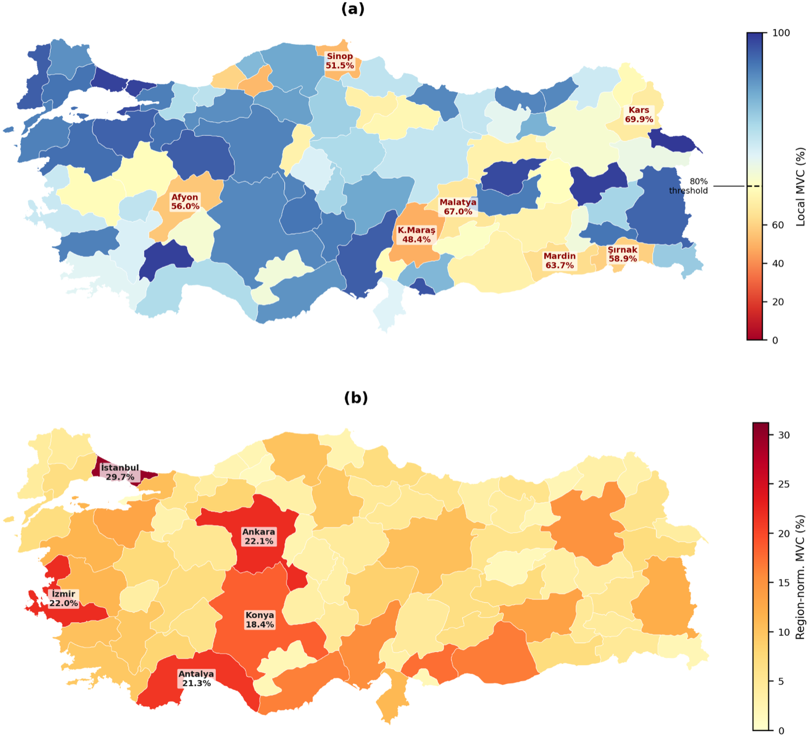
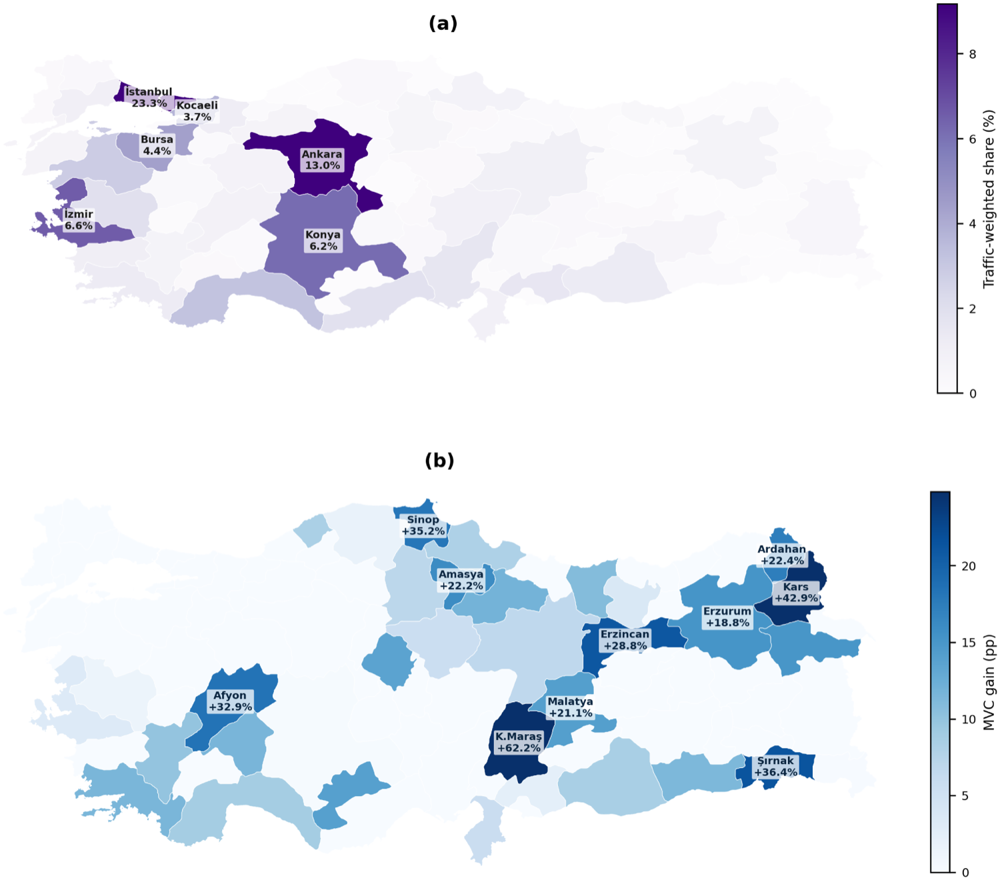
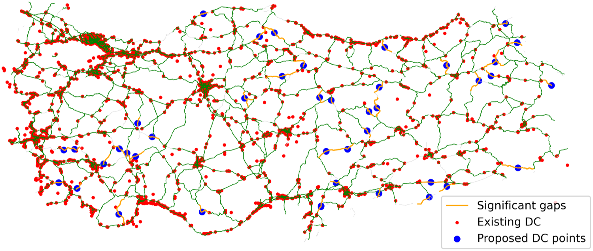

Grid resilience and storage
How battery storage, including electric-vehicle batteries, can keep customers supplied during outages, and where charging infrastructure falls short.
Research
Four connected areas, from the inverter to the national electricity market.
How battery storage, including electric-vehicle batteries, can keep customers supplied during outages, and where charging infrastructure falls short.
Using Türkiye's public electricity market data to describe plant outages, hydropower and wind generation, and to forecast them.
Where solar generation and agriculture can share the same land, and how solar-powered irrigation compares in cost.
Detecting islanding in microgrids with deep learning, and studying harmonic distortion in inverter-based systems.
Counting charging stations does not show whether an electric vehicle can complete a long intercity trip. This study treats the national intercity road network as a graph, places the public DC fast-charging stations on it, and measures how much of the corridor length stays within reach of a charger.
of the analysed primary corridor network meets the Minimum Viable Coverage (MVC) criterion with the existing stations.
of national traffic-weighted accessibility comes from the top ten provinces. The bottom 40% of provinces contribute about 2.2%.
candidate stations, placed at the centres of gap chains, raise national coverage to 91.22%.
of previously disconnected primary corridor is recovered. Coverage improves in 34 of 81 provinces.

(a) Local MVC coverage ratio under the existing DC fast-charging network at R = 80 km; provinces in orange fall below the 80% threshold. (b) Region-normalised MVC share, which reduces the bias from corridors crossing provincial boundaries.
Figure 2 of the paper cited below.

(a) Traffic-weighted MVC share, which weights accessibility by provincial vehicle-kilometre intensity and road hierarchy. (b) Post-deployment MVC gain after placing chargers at gap-chain centres, with the top ten provinces labelled.
Figure 3 of the paper cited below.

Existing DC fast chargers (red), significant gaps along the primary road network (orange) and the 46 proposed charging points (blue), placed at the centres of gap chains.
Figure 5 of the paper cited below.
Source (results and figures): A. Kaymaz Özcanlı, “Topology-aware gap analysis for national DC fast-charging networks: The case of Türkiye”, Electric Power Systems Research 265 (2027) 113922. doi.org/10.1016/j.epsr.2026.113922
Power plants in Türkiye report outages and maintenance as public market messages. These descriptive figures come from my analysis of those messages. They are independent academic work and are not published by the market operator.

(a) Outage events started each year, by plant type. (b) Unavailable energy each year: installed minus available capacity, multiplied by duration, with each event capped at seven days. Black dashes show the totals without the cap.
Reporting rules differ before 2018 (grey area), so earlier years are not directly comparable. 2026 is a partial year.
Source: EPİAŞ Transparency Platform, market message system (PMS). Own calculations.
Hourly generation, load and price data from the market operator show how the system changed as wind and solar grew from 7% to 22% of generation.
Coal held a 32–38% share throughout and grew in absolute terms. Gas became the swing fuel that covers dry years.
Hydro ranged from 55.5 TWh (2021) to 88.6 TWh (2019), a 33 TWh swing equal to about 10% of annual demand. In 2021 gas rose 39 TWh; in 2025 hydro fell 17 TWh and gas rose 15 TWh.
The system now reaches 61% in a single hour. There were 330 hours above 50% in 2025. 2018 is not shown.
Residual load is demand minus wind minus solar. Its minimum has moved from pre-dawn to midday, while the evening ramp grows with solar. The 2020 low reflects the pandemic spring.
| Indicator | 2017 | 2021 | 2025 |
|---|---|---|---|
| Demand (TWh) | 292.7 | 326.8 | 352.6 |
| Peak load (MW) | 47,062 | 55,575 | 59,504 |
| Wind + solar share of generation | 6.8% | 13.5% | 21.6% |
| Highest hourly wind + solar share | 19.6% | 39.2% | 61.2% |
| Minimum residual load (MW) | 17,995 | 16,025 | 10,315 |
| Largest 3-hour upward ramp (MW) | 13,240 | 12,438 | 17,047 |
| Midday ÷ evening day-ahead price | 1.13 | 0.88 | 0.63 |
| Hours at the annual price maximum | 1 | 205 | 1,029 |
Source: EPİAŞ Transparency Platform. Own calculations. Demand on a consistent scope; prices are nominal TL.